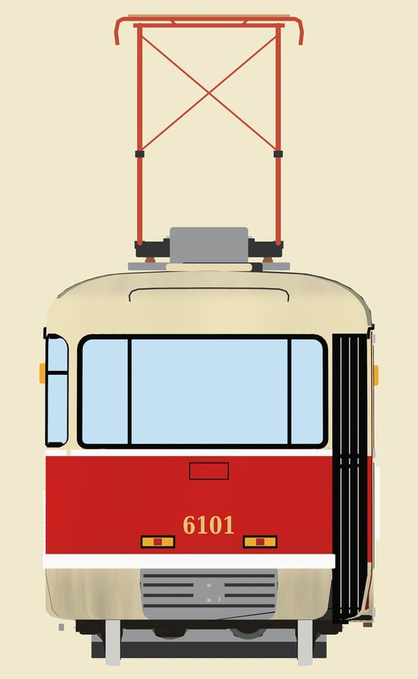
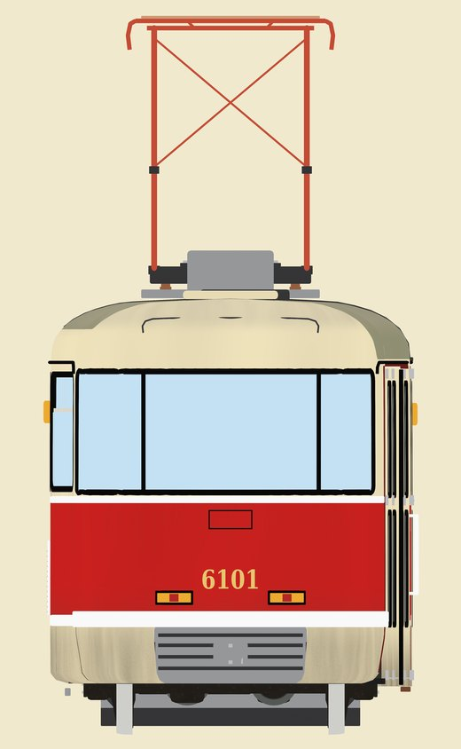

Every feature measured the same way on the drawing and on a flat-colour render of the model, in millimetres: across the car from its centre line (+ to the right as seen from behind, the door side) and up from the top of rail.


Drawing scale from its own dimensions: 2,500 mm between the width dimension lines gives 3.03 mm per pixel, and the 1,435 mm gauge then measures 1,433 mm. The centre is the midpoint of the body sides; the rail top is the top of the ground line. The model is rendered orthographically from behind at 1 mm per pixel with flat colours. Both are reduced to the same colour classes, and thin outlined items (beading, strip, plate frame, roof box) are taken at the centres of their outline strokes. Counts and colour sequences are compared as they are. Deviation = model − drawing.
| Feature | Drawing | Before | Dev. | After | Dev. |
|---|---|---|---|---|---|
| Rear window | |||||
| rear window left edge (y 2.10) The glass now wraps round both corners onto the sides (photo). Seen from behind it reaches the turn of the corner; the rear drawing draws the wrapped part as frame. | -978 | -969 | 9 | -1 054 | -76 |
| rear window right edge (y 2.10) As above. | 880 | 871 | -9 | 930 | 50 |
| left bar centre (y 2.10) | -608 | -607 | 1 | -605 | 3 |
| right bar centre (y 2.10) | 616 | 615 | -1 | 612 | -4 |
| left pane width (y 2.10) As above. | 336 | 346 | 10 | 434 | 98 |
| right pane width (y 2.10) As above. | 230 | 240 | 10 | 303 | 73 |
| rear window panes (y 2.10) Count of glass panes across the window. | 3 | 3 | 0 | 3 | 0 |
| rear window left edge (y 1.85) As above. | -978 | -969 | 9 | -1 055 | -77 |
| rear window right edge (y 1.85) As above. | 880 | 872 | -8 | 930 | 50 |
| left bar centre (y 1.85) | -605 | -608 | -3 | -604 | 1 |
| right bar centre (y 1.85) | 613 | 616 | 3 | 612 | -1 |
| left pane width (y 1.85) As above. | 339 | 346 | 7 | 436 | 97 |
| right pane width (y 1.85) As above. | 233 | 241 | 8 | 303 | 70 |
| rear window panes (y 1.85) As above. | 3 | 3 | 0 | 3 | 0 |
| rear window top at zv -0.85 | 2 505 | 2 501 | -4 | 2 502 | -3 |
| rear window bottom at zv -0.85 | 1 702 | 1 701 | -1 | 1 702 | 0 |
| rear window top at zv +0.00 | 2 502 | 2 501 | -1 | 2 501 | -1 |
| rear window bottom at zv +0.00 | 1 702 | 1 701 | -1 | 1 701 | -1 |
| rear window top at zv +0.75 | 2 498 | 2 501 | 3 | 2 503 | 5 |
| rear window bottom at zv +0.75 | 1 702 | 1 701 | -1 | 1 700 | -2 |
| Left corner window and door strip | |||||
| left side window inner edge As above. | -1 075 | -1 087 | -12 | -1 095 | -20 |
| left side window outer edge This is now the last left passenger window, standing on the tapering wall and seen edge-on, as the rear drawing shows it (its sash bar matches). The taper comes from the plan drawing. | -1 196 | -1 233 | -37 | -1 234 | -38 |
| left side window top | 2 486 | 2 497 | 11 | 2 480 | -6 |
| left side window bottom | 1 711 | 1 704 | -7 | 1 725 | 14 |
| left side window bars Count of horizontal bars. | 1 | 1 | 0 | 1 | 0 |
| left side window bar height The passenger windows' sash bar, 2.25 m. | 2 232 | 2 245 | 13 | 2 252 | 20 |
| door strip inner edge (y 2.0) Now the real rear door on the tapering wall, seen from behind. The plan drawing gives the taper (to 1,074 mm at the joint); the rear drawing draws the door edge ~120 mm further in. | 944 | 944 | 0 | 1 064 | 120 |
| door strip outer edge (y 2.0) As above. | 1 204 | 1 212 | 8 | 1 263 | 59 |
| door strip inner edge (y 1.2) As above. | 944 | 944 | 0 | 1 068 | 124 |
| door strip outer edge (y 1.2) As above. | 1 210 | 1 213 | 3 | 1 264 | 54 |
| door strip top The door edge seen from behind is now a thin glazed edge with light frames, not a dark strip, so it has no dark run to measure. | 2 556 | 2 545 | -11 | – | – |
| door strip bottom As above. | 326 | 320 | -6 | – | – |
| Gutters and indicators | |||||
| left gutter height The rear view draws short gutter strips round the rear corners; both side elevations end the gutter before the corner. The model follows the side elevations. | 2 574 | – | – | – | – |
| right gutter height As above. | 2 573 | – | – | – | – |
| left indicator zv | -1 285 | -1 276 | 9 | -1 276 | 9 |
| left indicator y | 2 235 | 2 241 | 6 | 2 241 | 6 |
| left indicator height | 142 | 156 | 14 | 156 | 14 |
| right indicator zv | 1 280 | 1 279 | -1 | 1 279 | -1 |
| right indicator y | 2 232 | 2 226 | -6 | 2 226 | -6 |
| right indicator height These are the indicators on the sides above the front bogie, seen from behind. Their size comes from the front view. | 139 | 156 | 17 | 156 | 17 |
| Red band, bumper strip and plate frame | |||||
| red top at zv -0.8 | 1 595 | 1 606 | 11 | 1 606 | 11 |
| red bottom at zv -0.8 | 858 | 857 | -1 | 857 | -1 |
| strip top at zv -0.8 | 858 | 857 | -1 | 857 | -1 |
| strip bottom at zv -0.8 | 747 | 746 | -1 | 746 | -1 |
| red top at zv +0.7 | 1 592 | 1 606 | 14 | 1 606 | 14 |
| red bottom at zv +0.7 | 856 | 857 | 1 | 857 | 1 |
| strip top at zv +0.7 | 856 | 857 | 1 | 857 | 1 |
| strip bottom at zv +0.7 | 745 | 746 | 1 | 746 | 1 |
| thick strip left end With the taper the bumper now ends inside the body width and the side strip shows beyond it, as drawn; the step sits 80 mm further out than in the drawing. | -1 016 | -1 240 | -224 | -1 096 | -80 |
| plate frame top | 1 559 | 1 555 | -4 | 1 555 | -4 |
| plate frame bottom | 1 426 | 1 430 | 4 | 1 430 | 4 |
| plate frame left | -150 | -148 | 2 | -148 | 2 |
| plate frame right | 154 | 148 | -6 | 148 | -6 |
| Number and tail lights | |||||
| number height | 136 | 137 | 1 | 137 | 1 |
| number width | 382 | 384 | 2 | 384 | 2 |
| number centre y | 1 077 | 1 080 | 3 | 1 080 | 3 |
| number centre zv | -6 | -4 | 2 | -4 | 2 |
| left tail unit width | 273 | 264 | -9 | 263 | -10 |
| left tail unit height | 115 | 100 | -15 | 100 | -15 |
| left tail unit centre zv | -384 | -391 | -7 | -390 | -6 |
| left tail unit centre y | 950 | 950 | 0 | 950 | 0 |
| left tail unit colours Colour at 22 %, 50 % and 78 % of the unit width. | amber-red-amber | amber-red-amber | same | amber-red-amber | same |
| right tail unit width | 270 | 264 | -6 | 263 | -7 |
| right tail unit height | 112 | 100 | -12 | 100 | -12 |
| right tail unit centre zv | 397 | 391 | -6 | 390 | -7 |
| right tail unit centre y | 948 | 950 | 2 | 950 | 2 |
| right tail unit colours As above. | amber-red-amber | amber-red-amber | same | amber-red-amber | same |
| Skirt, recess and coupler | |||||
| recess left edge | -517 | -522 | -5 | -522 | -5 |
| recess right edge | 528 | 522 | -6 | 522 | -6 |
| recess width | 1 045 | 1 044 | -1 | 1 044 | -1 |
| lobe bottom at zv -0.80 | 353 | 355 | 2 | 355 | 2 |
| lobe bottom at zv +0.75 | 353 | 355 | 2 | 355 | 2 |
| coupler head centre y | 583 | 585 | 2 | 585 | 2 |
| Roof, dome and pantograph | |||||
| roof box left | -299 | -300 | -1 | -300 | -1 |
| roof box right | 300 | 300 | 0 | 300 | 0 |
| roof box top | 3 359 | 3 361 | 2 | 3 361 | 2 |
| pantograph left upright | -531 | -530 | 1 | -530 | 1 |
| pantograph right upright | 519 | 530 | 11 | 530 | 11 |
| pantograph bracing crossings at 4.30 m Count of bracing members crossing that height between the frames. | 2 | 2 | 0 | 2 | 0 |
| pan bow span | 1 455 | 1 454 | -1 | 1 454 | -1 |
| dome panel width | 1 211 | 1 206 | -5 | 1 208 | -3 |
| Body outline | |||||
| body left at y 2.98 The drawing's roof outline is lopsided here: the right side matches the model within 4-13 mm. | -893 | -855 | 38 | -855 | 38 |
| body right at y 2.98 | 871 | 867 | -4 | 867 | -4 |
| body left at y 2.90 As above. | -1 093 | -1 067 | 26 | -1 067 | 26 |
| body right at y 2.90 | 1 077 | 1 075 | -2 | 1 075 | -2 |
| body left at y 2.75 As above. | -1 241 | -1 219 | 22 | -1 218 | 23 |
| body right at y 2.75 | 1 232 | 1 219 | -13 | 1 219 | -13 |
| body left at y 2.00 | -1 262 | -1 254 | 8 | -1 254 | 8 |
| body right at y 2.00 | 1 259 | 1 263 | 4 | 1 263 | 4 |
| body left at y 1.20 | -1 265 | -1 272 | -7 | -1 272 | -7 |
| body right at y 1.20 | 1 265 | 1 264 | -1 | 1 264 | -1 |
| body left at y 0.50 | -1 253 | -1 250 | 3 | -1 250 | 3 |
| body right at y 0.50 | 1 268 | 1 260 | -8 | 1 260 | -8 |